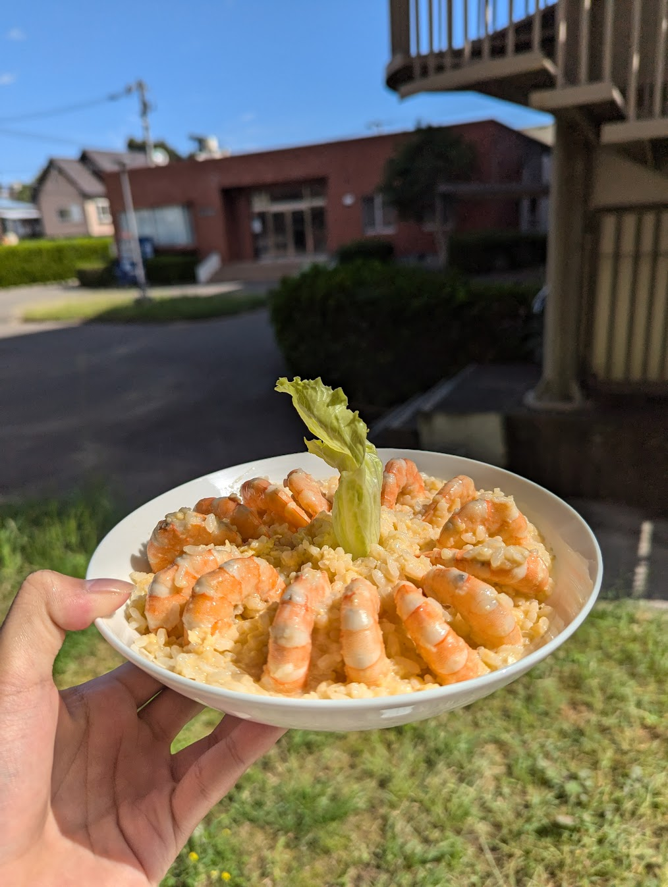
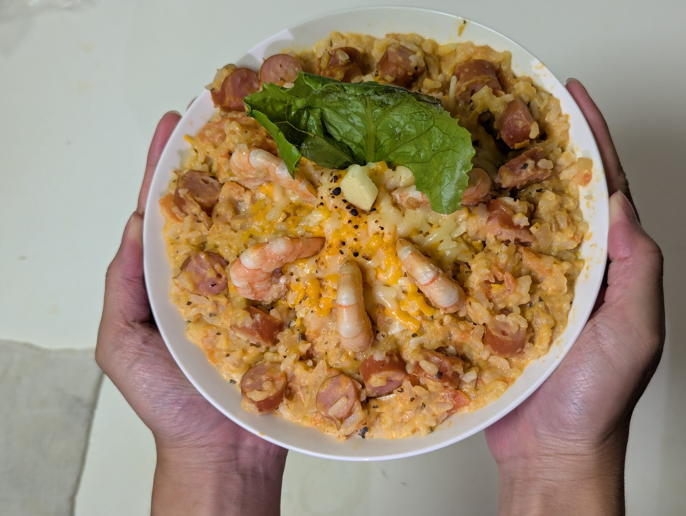
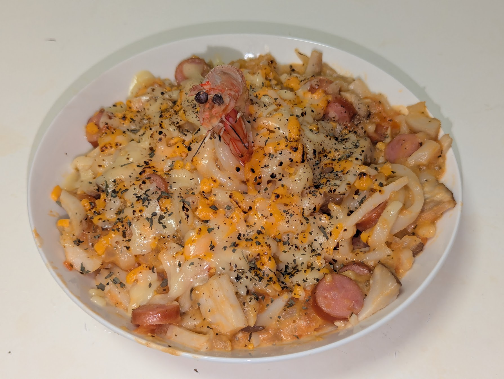
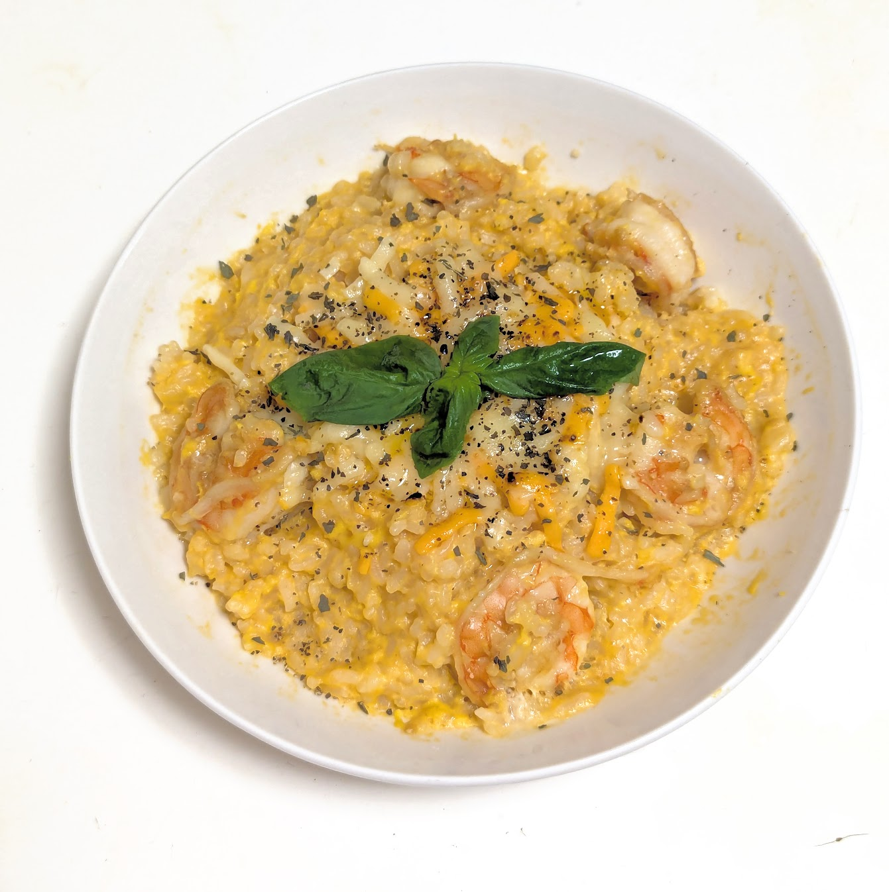
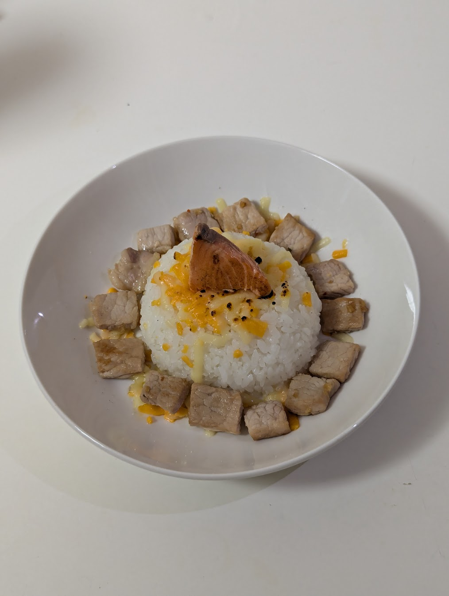
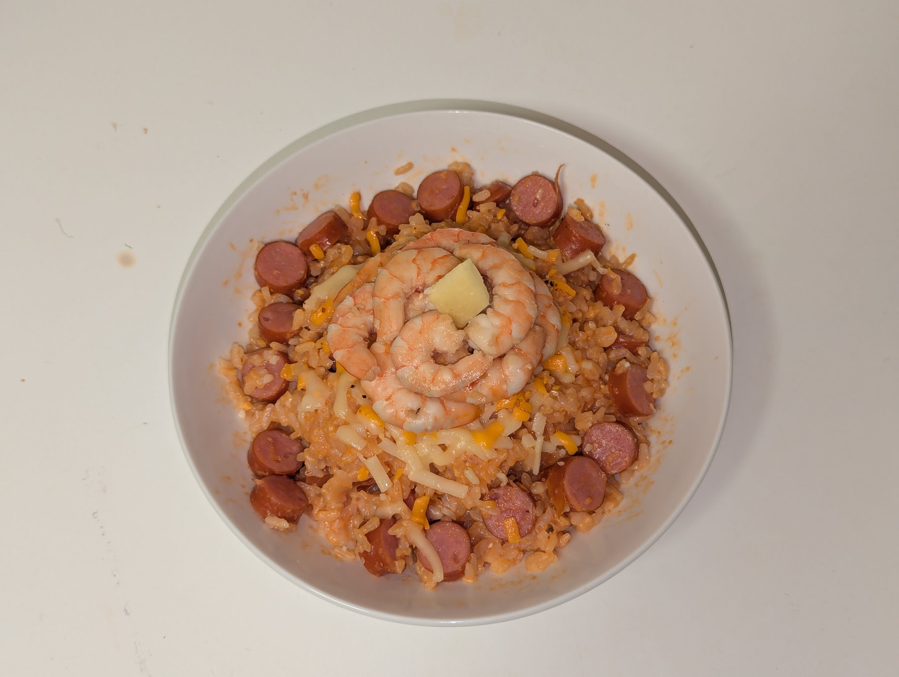
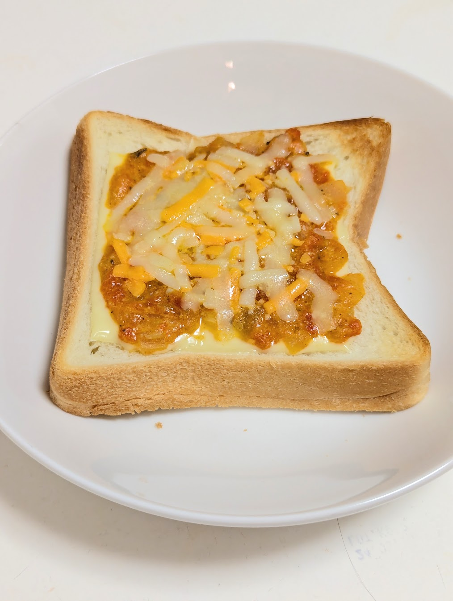
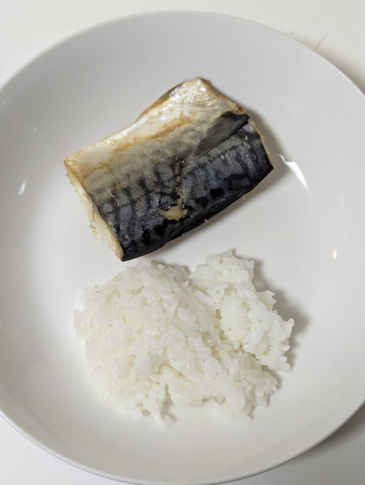
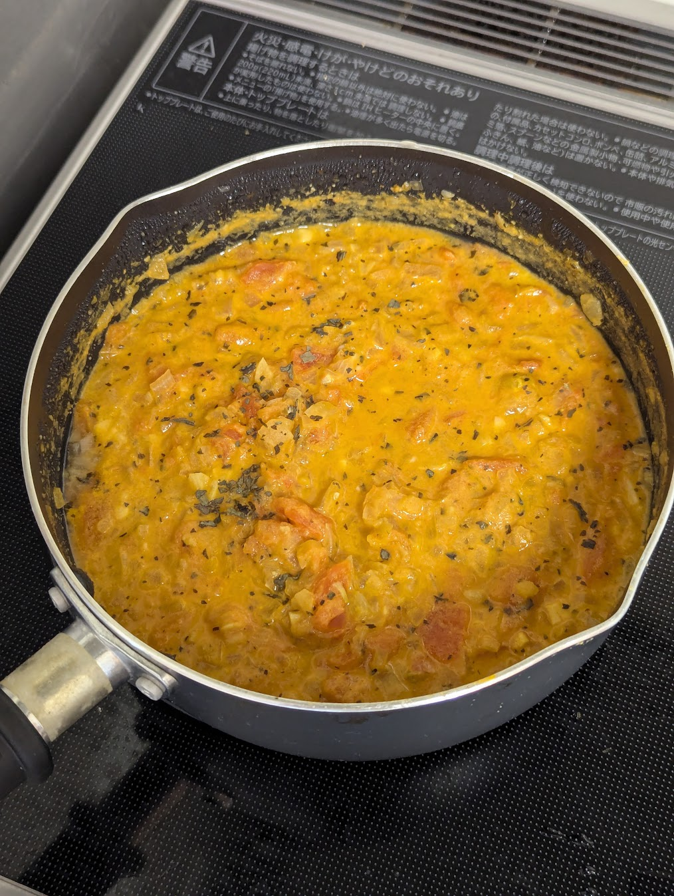

🦐
招牌燉飯
茄汁風味

經典鮮蝦燉飯
吸飽海鮮高湯與番茄醬精華的精緻燉飯，鋪上滿滿的鮮甜大蝦。
主要食材：鮮甜大蝦、白米、自製番茄醬精選 Miki 的私房手作料理。點擊可放大檢視每道佳餚與製作巧思。

吸飽海鮮高湯與番茄醬精華的精緻燉飯，鋪上滿滿的鮮甜大蝦。
主要食材：鮮甜大蝦、白米、自製番茄醬
脆彈德式香腸與鮮美肥豬蝦的夢幻聯動，吸飽濃郁湯汁的燉飯令人垂涎。
主要食材：鮮大蝦、德式香腸、白米
濃郁茄汁包裹著Ｑ彈麵條，搭配產地直送的肥美鮮蝦，口感豐富有層次。
主要食材：鮮大蝦、義大利麵、特製番茄醬
鮮甜彈牙的蝦仁與特製番茄醬汁完美融合，每一口飯都裹滿濃郁醬香。
主要食材：蝦仁、白飯、手作番茄醬
嚴選新鮮蝦仁與精選海味，雙重海鮮交織出滿滿的鮮甜滋味。
主要食材：鮮蝦、特選海味、香料調味
鹹香的德式香腸與鮮美蝦仁大火快炒，香氣四溢的完美下酒菜與配菜。
主要食材：德式香腸、鮮大蝦、蒜香調味
簡單的烤吐司抹上特製手工番茄醬，酥脆與酸甜的完美結合。
主要食材：吐司麵包、自製手熬番茄醬
月底省錢大作戰！雖然簡單，但營養與風味依然不妥協。
主要食材：經濟食材、創意調味
慢火熬煮的獨門番茄醬汁，酸甜適中，是所有燉飯與料理的美味靈魂。
主要食材：新鮮番茄、洋蔥、大蒜、特調香料